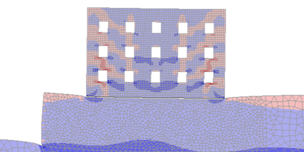

Моделирование физически нелинейных процессов в строительных конструкциях
Студенческий научный кружок ННГАСУ
Научная деятельность
Кружок занимается исследовательскими работами в области физической нелинейности строительных конструкций из каменных кладок.

Численное моделирование

Инженерные калькуляторы
Руководитель и преподаватели
Сотрудники кафедр «Железобетонные, каменные и деревянные конструкции» и «Теория сооружений и техническая механика» ННГАСУ, а также инженеры-исследователи ГК «SCAD Soft».

Максим Леонидович Поздеев
руководитель кружка, канд. техн. наук, ст. преп. каф. ЖБКиДК ННГАСУ, инженер-исследователь ГК «SCAD Soft»
Илья Васильевич Смагин
преподаватель кружка, аспирант, ассистент каф. ТСиТМ ННГАСУ, инженер-исследователь ГК «SCAD Soft»